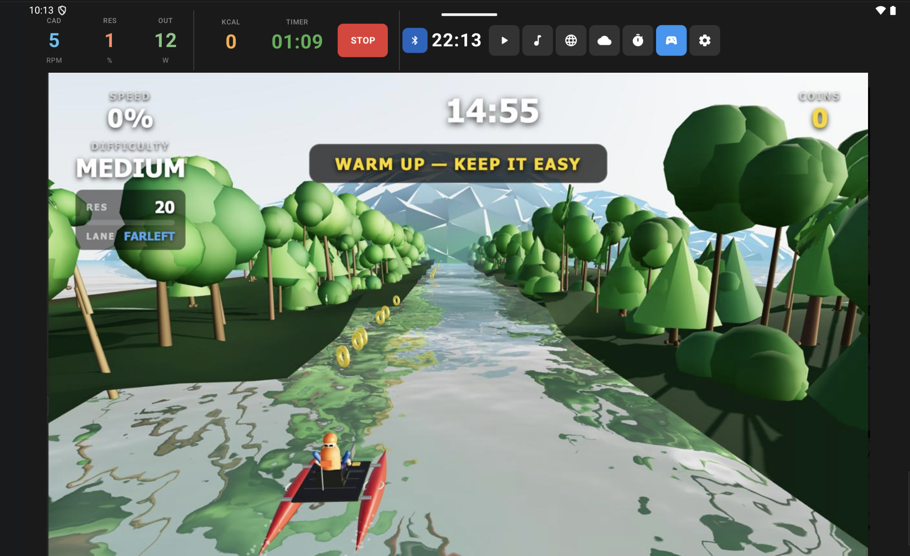
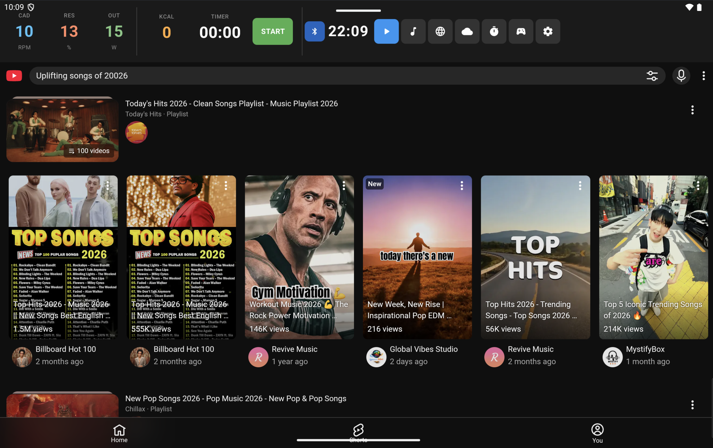
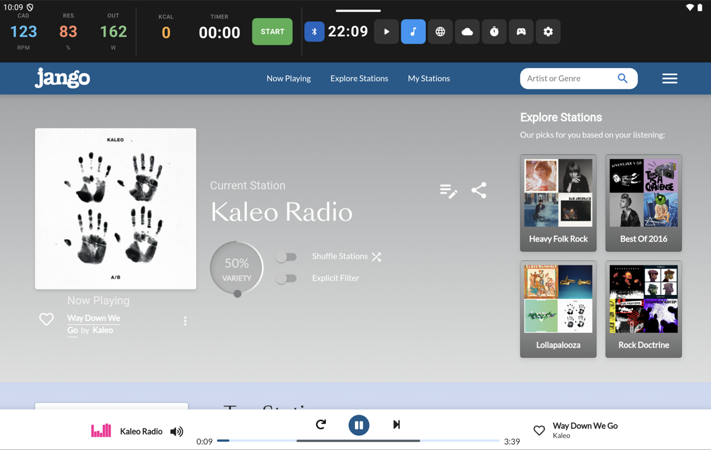
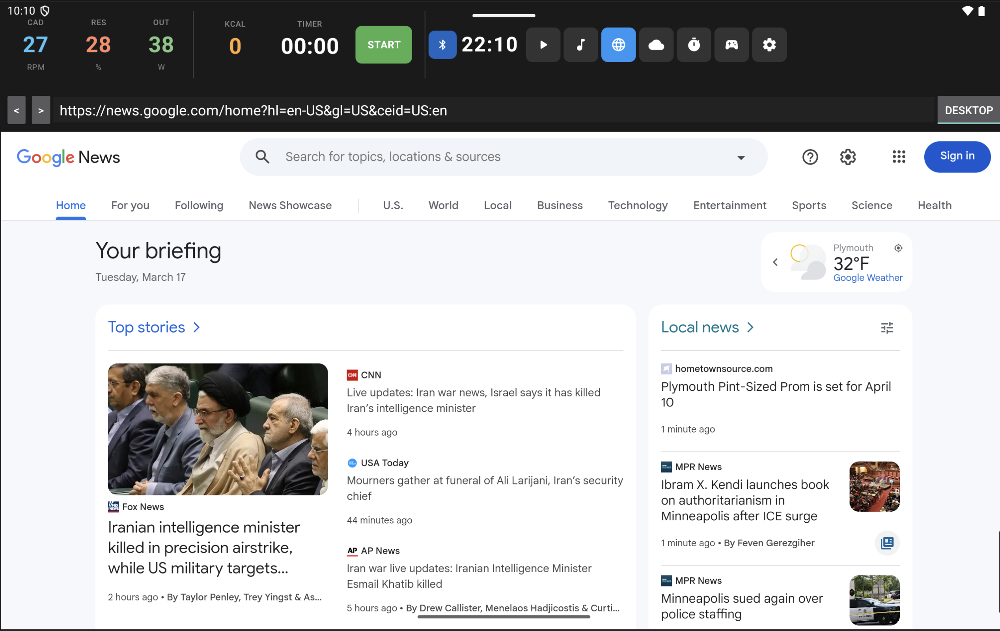
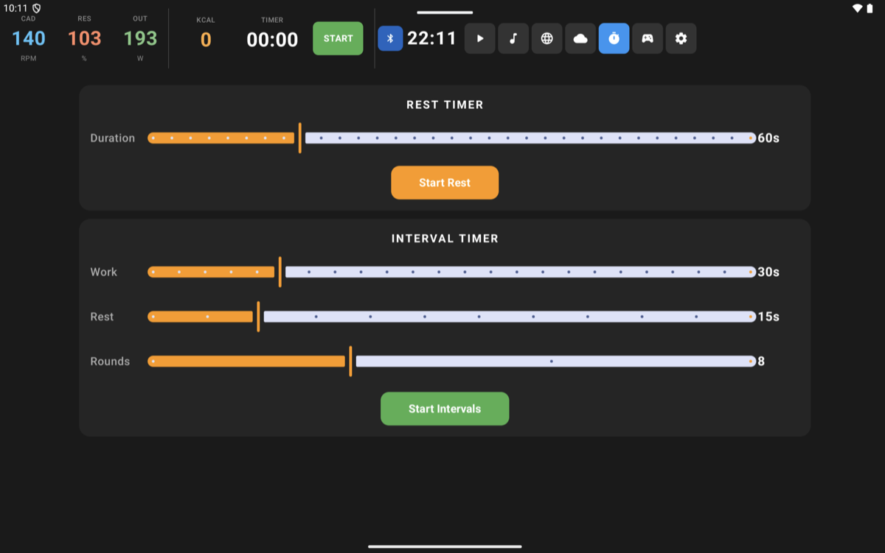

Turn your locked-down Peloton tablet into a wide-open training dashboard. Stream YouTube, sync to Garmin, and play immersive 3D exergames—all while keeping your raw bike metrics front and center.

See VeloPlay running on a real Peloton bike — every feature, every tab, every game.
No more choosing between entertainment and training data. Swipe between tabs without losing your metrics.
YouTube and Jango Radio built right in. No Google Play Services required. Browse playlists, discover stations, and ride to your own soundtrack.


A persistent top bar streaming Cadence, Resistance, Output, Calories, and Timer directly from the bike's proprietary sensors. Always visible, on every tab.
Access Google News, Netflix, or your training logs via a full desktop-class browser with desktop mode toggle.

Built-in rest timer and fully configurable HIIT interval timer. Set work/rest durations, rounds, and hit start. No third-party app needed.

Stop staring at a leaderboard. Navigate a low-poly world where your physical resistance is your steering wheel.
Navigate your catamaran through a rushing low-poly river lined with trees and mountains. Turn the resistance knob to switch lanes, collect coins, and dodge obstacles.
Race through a dense forest on your mountain bike. Maintain cadence to outrun the predator zones.
VeloPlay transforms your bike into a standard Bluetooth Power & Speed sensor. Your Garmin watch "sees" the bike natively.
No more manual entry—your power curves, VO2 Max, and Training Load sync automatically to Garmin Connect and Strava.
Native lib-grupetto sensor bridge for real-time metric streaming with no perceptible delay.
100% local data processing. No health data leaves the bike. Ever.
Optimized specifically for Peloton v1 and v2 tablets (Android 7–9).
Broadcasts standard BLE Power & Speed profiles. Compatible with any ANT+/BLE fitness device.
Free. Open-source. No account required.
Requires Peloton tablet with USB debugging enabled